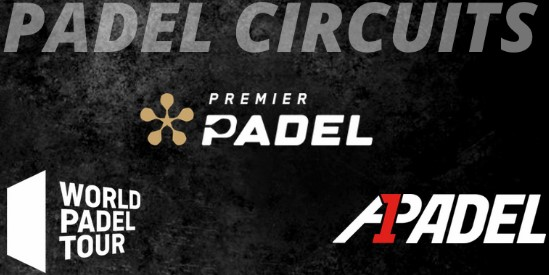

Tamaño de la cancha
Pádel: La cancha mide 10 metros de ancho por 20 metros de largo. Es cerrada y tiene paredes de vidrio en el fondo y de malla en los laterales, lo que permite rebotes.
Tenis: La cancha es más grande, midiendo 23.77 metros de largo por 8.23 metros de ancho en singles. No tiene paredes, lo que significa que la pelota se sale de la cancha si no se controla bien.
Ejemplo: En pádel, si la pelota golpea una pared después de rebotar en el suelo, aún puede ser jugada. En tenis, cualquier pelota que salga de las líneas de la cancha se considera fuera.
Raquetas
Pádel: La raqueta es sólida y perforada, sin cuerdas. Es más pequeña y compacta. Esto favorece para un mayor control y precisión en los golpes, aunque con menos potencia.
Tenis: La raqueta es más grande y tiene cuerdas, lo que permite generar más potencia y velocidad en la pelota. El tamaño típico es de 68 cm a 74 cm de largo.
Ejemplo: En pádel, el jugador debe adaptarse a un estilo de juego más técnico y estratégico debido al tamaño de la raqueta. En tenis, se puede generar más velocidad en la pelota con un swing amplio.
Uso de paredes
Pádel: Las paredes son una parte importante del juego. Los jugadores pueden dejar que la pelota rebote en las paredes y usar esa dinámica para devolverla. Esto hace que el juego sea más estratégico, ya que puedes planear golpes que aprovechen las paredes.
Tenis: No hay paredes involucradas en el juego. Si la pelota sale del campo de juego, es punto perdido.
Ejemplo: En pádel, un jugador puede hacer que la pelota golpee la pared lateral y luego cruce la red, lo que puede confundir al oponente.
Servicio
Pádel: El saque siempre se realiza por debajo de la cintura y debe rebotar en el suelo antes de cruzar la red. Se realiza en diagonal y, después de botar, la pelota puede golpear las paredes.
Tenis: El saque es por encima de la cabeza, y es uno de los golpes más poderosos del juego. No hay paredes involucradas, y la pelota debe entrar directamente en la zona de servicio del oponente.
Ejemplo: En pádel, el saque es más suave y controlado que en tenis, donde un saque potente puede alcanzar velocidades de más de 200 km/h.
Popularidad y torneos
El pádel ha crecido mucho en popularidad, sobre todo en Europa y América Latina. España es el país donde más se juega, con una enorme cantidad de aficionados y jugadores profesionales.
La Premier Pádel (la cual compró los derechos de World Padel Tour) es el circuito profesional más importante a nivel mundial. Se celebran torneos en diferentes ciudades, atrayendo a los mejores jugadores del mundo. A su vez la A1 Pádel también es un gran circuito profesional el cual recorre el mundo durante el año.
El pádel es un deporte caro, pero a su vez también es accesible para jugadores de todas las edades y niveles, lo que ha ayudado a su expansión global.
